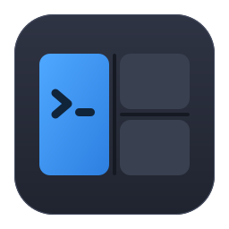

Never elevated
WinMux installs for your account only, needs no administrator rights, and never asks for them as a workaround. It changes no PATH; typing winmux in Explorer's address bar works through a per-user registration.

WinMuxCtrl+Shift+P % Free and open source, for Windows 10 and 11
WinMux splits one window into panes and tabs, and a pane can hold anything: a shell, a file browser, or an ordinary Windows application in its own process. Close it tonight, and tomorrow the same layout comes back, every program in the folder it was in.
C:\src\winmux> dotnet build -c Release WinMux.Core → bin\Release\net10.0 WinMux.Shell → bin\x64\Release Build succeeded. 0 warnings. C:\src\winmux>
Release checklist
– tag v0.9.0
– checksums.txt
version = 1
[[windows.nodes]]
id = 'n0'
kind = 'split'
direction = 'columns'
children = ['n1', 'n2']
ratios = [0.5, 0.5]
[[windows.panes]]
kind = 'terminal'
title = 'build'
program = 'C:\WINDOWS\system32\cmd.exe'
cwd = 'C:\src\winmux'An interactive illustration drawn in your browser, not a screenshot. The toolbar buttons are the real ones; so is the file format.
why
Terminal multiplexers only hold terminals. Tiling window managers rearrange your whole desktop. Tab tools group windows but forget them. Layout restorers reopen apps but give you no panes. WinMux is the intersection, in one window with one keymap.
| Kind of tool | Panes and tabs | A process per pane | Non-terminal apps | Layout comes back |
|---|---|---|---|---|
| Terminal multiplexersWindows Terminal, WezTerm, Zellij | Yes | Yes | No, terminals only | Partly |
| Tiling window managersGlazeWM, komorebi | The whole desktop | Yes | As loose windows | Weak |
| Window tabbersGroupy, TidyTabs | Tabs only | Yes | Yes | No |
| Layout restorersPowerToys Workspaces | No | Yes | Yes | Yes |
| WinMux | Nested, on any edge | Yes, isolated | Embedded or attached | Continuously saved |
stability
Putting another program's window inside yours is easy. Surviving that program when it hangs is not: one ordinary window call against a stuck application blocks the caller for as long as the application is stuck.
So WinMux never touches a hosted application's window itself. Every application pane gets its own small WinMux.PaneHost process, which holds the window and does the risky calls. When the application hangs, its host waits; the shell keeps drawing, keeps taking keys, and can still detach or close the pane.
Terminals are separate processes too, through ConPTY. Close a pane and only that pane's process tree goes.
Finding each pane's folder, three ways, best answer wins
prefix w
The layout is saved continuously, a moment after every change, and each time a pane changes folder. A crash does not cost you the session. On the next start WinMux rebuilds the tree, the tabs, each pane's program, arguments and folder.
The session is a TOML file meant for people: the tree is flattened into a list, panes are short tables, and paths keep their backslashes. A file that will not load is quarantined and reported, never silently replaced with an empty session.
What it does not do: bring back what was inside a process. A restored shell is a new shell in the right folder, without its scrollback or running jobs. Nothing can restore those, so WinMux does not pretend to.
prefix e
Every kind is a provider behind the same public interface, so the layout, the session file and the keymap never need to know what is inside a pane. A fifth kind can be loaded from a folder beside the app.
Ctrl+C.prefix A
WinMux hosts an application in one of two ways. Embed takes its window into the pane, so it moves, clips and resizes with the layout. Attach leaves the window where Windows wants it and keeps it lined up with the pane, the way a tiling window manager does.
A shipped, editable compatibility list picks the way per application. When an app refuses to be embedded, WinMux keeps the same window alive, says why in plain words, and attaches it instead. You can switch any pane live, and the choice is remembered.
When WinMux closes it hands every window back exactly as it found it: parent, styles and position.
What was measured
| Application | Hosted as |
|---|---|
| Ordinary Win32 apps | Embed, restored byte-exactly on detach |
| Chromium-based apps | Embed |
| Store and packaged apps | Attach; Windows refuses embedding |
| Apps running as administrator | Refused and explained. WinMux never runs elevated to get around it. |
| Monitors at different scales | Supported in code, not yet verified on real hardware |
Details in ADR 0003 and Troubleshooting.
prefix :
The default keymap is tmux-style, behind Ctrl+Shift+P so Ctrl+B stays with your terminal programs. Every action is also a toolbar button, a command-palette entry and a wmux command, and all four call the same named action.
Bindings written as a character match the character your keyboard produces, so % and : still work on a Japanese keyboard, where they sit on different keys. Replace the whole map with one JSON file, or turn the prefix off.
It looks like Windows 11 because it reads Windows: Mica, your accent colour, light and dark, the toolbar in the title bar and real snap layouts.
# Prefix, then a key
% split right " split down
c new tab v tab group, tabs down the side
e empty pane o adopt an open window
, rename x close
w save : command palette
# The same actions from any script
wmux split -h
wmux focus left
wmux new-tab
wmux validate session.tomlWinMux installs for your account only, needs no administrator rights, and never asks for them as a workaround. It changes no PATH; typing winmux in Explorer's address bar works through a per-user registration.
Help → About checks GitHub for a newer release and refuses to install anything whose SHA-256 does not match the published checksums.txt. Stable releases only, unless you ask for prereleases.
No account, no telemetry. The update check is the only request WinMux makes by itself, and one setting turns it off. Servers you browse are the ones you connect to.
WinMux is before 1.0: terminals, sessions, application panes and the file browser are in daily use, and the interface is still being finished. Compatibility with your applications is a measured list, not a promise. Tell us what does not fit.
WinMux , released .
Downloads are on the GitHub releases page.
Needs the .NET 10 Desktop Runtime; setup checks for it and offers the download. The installer is per user, into %LOCALAPPDATA%\Programs\WinMux, and is not code-signed yet, so SmartScreen warns on first start. Unzip the portable copy anywhere you can write to, not under Program Files. Uninstalling keeps your sessions and settings.
Needs the .NET 10 SDK.
git clone https://github.com/rennerdo30/winmux
cd winmux
.\run.cmd # build and launch, isolated profile
.\publish.cmd # the same zip a release carries